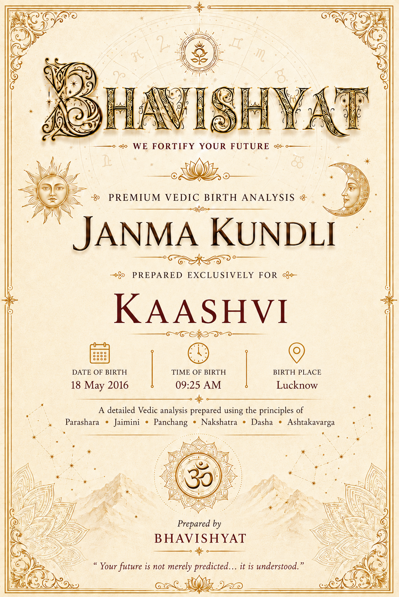
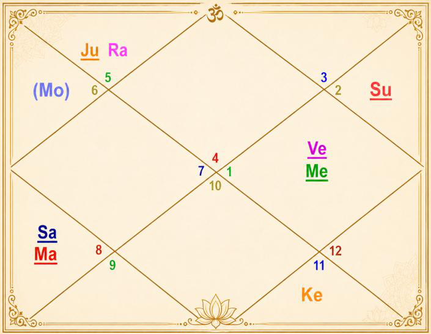

Janma Kundli • Kaashvi
Birth Details & Panchang
| Name | Kaashvi | Paksha | Shukla |
| Date of Birth | 18 May 2016 | Tithi | Dwadashi (12) |
| Time of Birth | 09:25 AM | Nakshatra | Hasta |
| Birth Place | Lucknow | Vaar | Wednesday |
| Longitude | 80°56' E | Yoga | Siddhi |
| Latitude | 26°50' N | Karan | Baalava |
| Ascendant | Cancer | Asc Lord | Moon |
| Tithi Lord | Mercury | Tithi Deity | Lord Vishnu |
| Nakshatra Lord | Moon | Nakshatra Deity | Savitri (Sun God) |
| Yoga Deity | Ganesha | Karan Deity | Brahma |
| Yogi | Mars | Duplicate Yogi | Saturn |
| Abhiyogi | Ketu | Dagdha Rashi | Libra (7), Capricorn (10) |
Natal Chart (Rashi)

| Planet Distribution | Evenly distributed | ||
| Ascendant | Cancer (Karka) | Moon / Sun Sign | Virgo (Kanya) / Taurus (Vrishabha) |
| Malefic | Mercury (Budh), Saturn (Shani) | Shunya Nakshatra | Punarvasu, Uttara Ashadha, Pushya |
| Maraka | Sun (Surya) | Dasha Balance | 0Y 4M 13D |
| Badhaka | Venus (Shukra) | Mangalik | Dosha cancelled |
| Birth Dasha | Mo-Su-Ra (1-9-3) | ||
Janma Kundli • Kaashvi
Favourable Influences
| Benefic Years | 18, 21, 23, 27, 30, 32, 36, 39 | ||
| Favourable Days | Tuesday, Monday, Thursday | ||
| Favourable Planets | Mars, Moon, Jupiter | ||
| Unfavourable Planets | Mercury, Saturn | ||
| Favourable Signs | Cancer, Scorpio, Pisces, Virgo (BAV), Aquarius (BAV) | ||
| Favourable Ratna | Pearl | Favourable UpRatna | Moon Stone, Hakik |
| Lucky Ratna | Yellow Sapphire, Yellow Topaz, Citrine, Amber | Favourable Deity | Shankar |
| Favourable Metal | Silver | Favourable Colour | White |
| Direction | North-West | Favourable Cereals | Rice |
| Favourable Plant | Ashoka Tree / Palash | ||
| Favourable Temple | Somnath Temple, Savitar Sun Temple | ||
Planets in Rashi Chart
| Planet | Lordship | Sign | Nakshatra | Nak. Lord | Nak. Count | Nav Tara | Char Karak |
|---|---|---|---|---|---|---|---|
| Sun | 2L | Taurus (2) | Krittika | Sun | 18 N | 9 | DaraKarak (7H) |
| Moon | 1L | Virgo (6) | Hasta | Moon | 1 N | 1 | Amatyakarak |
| Mars | 10L, 5L | Scorpio (8) | Anuradha | Saturn | 5 N | 2 | Gnatikarak (6H) |
| Mercury | 12L, 3L | Aries (1) | Bharani | Venus | 17 N | 6 | Bhratrikaraka (3H) |
| Jupiter | 6L, 9L | Leo (5) | Purva Phalguni | Venus | 26 N | 4 | Putrakarak (5H) |
| Venus | 11L, 4L | Aries (1) | Krittika | Sun | 18 N | 8 | Atmakarak (Life) |
| Saturn | 7L, 8L | Scorpio (8) | Jyeshtha | Mercury | 6 N | 5 | Matrikarak (4H) |
| Rahu | — | Leo (5) | Purva Phalguni | Venus | 26 N | 3 | — |
| Ketu | — | Aquarius (11) | Purva Bhadrapada | Jupiter | 13 N | 7 | — |
| Debilitated Planet(s) | — | Combust Planet(s) | Venus |
| Retrograde Planet(s) | Mars, Mercury, Saturn | ||
Sarvastakvarga & Houses
| Very Strong (35+) | 8H | ||
| Strong (31-35) | 1H, 3H, 6H | ||
| Above Average (28-30) | 2H, 12H | ||
| Below Average (24-27) | 5H, 7H, 9H, 11H | ||
| Weak (21-23) | 10H | ||
| Very Weak (<21) | 4H | ||
Janma Kundli • Kaashvi
Houses in Rashi Chart
| House | Sign | Planets | SAV | Lords | Aspect |
|---|---|---|---|---|---|
| 1H | Cancer (4) | — | 31 | — | — |
| 2H | Leo (5) | Jupiter, Rahu | 29 | 6L, 9L | Saturn |
| 3H | Virgo (6) | Moon | 34 | 1L | — |
| 4H | Libra (7) | — | 18 | — | Ketu |
| 5H | Scorpio (8) | Mars, Saturn | 25 | 10L, 5L; 7L, 8L | — |
| 6H | Sagittarius (9) | — | 32 | — | Jupiter, Rahu |
| 7H | Capricorn (10) | — | 25 | — | Saturn |
| 8H | Aquarius (11) | Ketu | 36 | — | Mars |
| 9H | Pisces (12) | — | 27 | — | — |
| 10H | Aries (1) | Mercury, Venus | 23 | 12L, 3L; 11L, 4L | Jupiter, Rahu |
| 11H | Taurus (2) | Sun | 27 | 2L | — |
| 12H | Gemini (3) | — | 30 | — | Mars, Ketu |
Bhinnashtak Varga (BAV)
| Sign | Sa | Ju | Ma | Su | Ve | Me | Mo | Ra |
|---|---|---|---|---|---|---|---|---|
| 4 | 4 | 3 | 4 | 5 | 3 | 5 | 6 | 2 |
| 5 | 2 | 6 | 3 | 4 | 5 | 5 | 4 | 2 |
| 6 | 5 | 4 | 6 | 5 | 5 | 4 | 5 | 5 |
| 7 | 2 | 4 | 1 | 2 | 3 | 3 | 3 | 6 |
| 8 | 3 | 4 | 4 | 4 | 3 | 3 | 4 | 5 |
| 9 | 4 | 5 | 2 | 6 | 5 | 6 | 4 | 2 |
| 10 | 4 | 6 | 1 | 3 | 4 | 3 | 4 | 4 |
| 11 | 4 | 5 | 6 | 5 | 5 | 6 | 5 | 2 |
| 12 | 5 | 5 | 2 | 3 | 4 | 3 | 5 | 7 |
| 1 | 3 | 3 | 1 | 2 | 5 | 5 | 4 | 1 |
| 2 | 2 | 7 | 4 | 4 | 4 | 4 | 2 | 4 |
| 3 | 2 | 3 | 4 | 7 | 4 | 6 | 4 | 3 |
Janma Kundli • Kaashvi
Vimshottari Dasha
Maha Dasha
| Dasha Lord | From | To |
|---|---|---|
| Moon | 30-Sep-2006 | 30-Sep-2016 |
| Mars | 30-Sep-2016 | 30-Sep-2023 |
| Rahu | 30-Sep-2023 | 30-Sep-2041 |
| Jupiter | 30-Sep-2041 | 29-Sep-2057 |
| Saturn | 29-Sep-2057 | 29-Sep-2076 |
| Mercury | 29-Sep-2076 | 29-Sep-2093 |
| Ketu | 29-Sep-2093 | 30-Sep-2100 |
| Venus | 30-Sep-2100 | 30-Sep-2120 |
| Sun | 30-Sep-2120 | 30-Sep-2126 |
Antar Dasha (Rahu Maha Dasha)
| AD Lord | From | To |
|---|---|---|
| Rahu | 30-Sep-2023 | 12-Jun-2026 |
| Jupiter | 12-Jun-2026 | 05-Nov-2028 |
| Saturn | 05-Nov-2028 | 12-Sep-2031 |
| Mercury | 12-Sep-2031 | 31-Mar-2034 |
| Ketu | 31-Mar-2034 | 19-Apr-2035 |
| Venus | 19-Apr-2035 | 18-Apr-2038 |
| Sun | 18-Apr-2038 | 13-Mar-2039 |
| Moon | 13-Mar-2039 | 11-Sep-2040 |
| Mars | 11-Sep-2040 | 30-Sep-2041 |
Pratyantar Dasha (Jupiter Antar Dasha)
| P. Dasha | From | To |
|---|---|---|
| Jupiter | 12-Jun-2026 | 07-Oct-2026 |
| Saturn | 07-Oct-2026 | 23-Feb-2027 |
| Mercury | 23-Feb-2027 | 27-Jun-2027 |
| Ketu | 27-Jun-2027 | 17-Aug-2027 |
| Venus | 17-Aug-2027 | 10-Jan-2028 |
| Sun | 10-Jan-2028 | 23-Feb-2028 |
| Moon | 23-Feb-2028 | 06-May-2028 |
| Mars | 06-May-2028 | 26-Jun-2028 |
| Rahu | 26-Jun-2028 | 05-Nov-2028 |
Janma Kundli • Kaashvi
Nav Tara Sequence
| Planet | Chara Karak | House | Lordship | Strength | Nakshatra | Lord | Placement |
|---|---|---|---|---|---|---|---|
| Moon | Amatyakarak | 3H | 1L | Strong (31-35) | Hasta | Moon | 3H |
| Mars | Gnatikarak (6H) | 5H | 10L, 5L | Below Avg (24-27) | Anuradha | Saturn | 5H |
| Rahu | — | 2H | — | Above Avg (28-30) | Purva Phalguni | Venus | 10H |
| Jupiter | Putrakarak (5H) | 2H | 6L, 9L | Above Avg (28-30) | Purva Phalguni | Venus | 10H |
| Saturn | Matrikarak (4H) | 5H | 7L, 8L | Below Avg (24-27) | Jyeshtha | Mercury | 10H |
| Mercury | Bhratrikaraka (3H) | 10H | 12L, 3L | Weak (21-23) | Bharani | Venus | 10H |
| Ketu | — | 8H | — | Very Strong (35+) | Purva Bhadrapada | Jupiter | 2H |
| Venus | Atmakarak (Life) | 10H | 11L, 4L | Weak (21-23) | Krittika | Sun | 11H |
| Sun | DaraKarak (7H) | 11H | 2L | Below Avg (24-27) | Krittika | Sun | 11H |
Birth Chart Nav Tara Chakra
| Moon (Janam) | 1 | Moon | 10 | 19 | ||
| Mars (Sampat) | 2 | 11 | 20 | |||
| Rahu (Vipat) | 3 | 12 | 21 | |||
| Jupiter (Kshem) | 4 | 13 | Ketu | 22 | ||
| Saturn (Pratyari) | 5 | Mars | 14 | 23 | ||
| Mercury (Sadhak) | 6 | Saturn | 15 | 24 | ||
| Ketu (Nidhan) | 7 | 16 | 25 | |||
| Venus (Mitra) | 8 | 17 | Mercury | 26 | Jupiter, Rahu | |
| Sun (Ati Mitra) | 9 | 18 | Sun, Venus | 27 |
Important Saturn Transits
| 1st Sade Sati | 27 Aug 2036 – 30 Aug 2044 | ||
| 2nd Sade Sati | 13 Oct 2065 – 23 Oct 2073 | ||
| 3rd Sade Sati | 18 Aug 2095 – 03 Dec 2102 | ||
| Ashtam Shani | 03 Jun 2027 – 16 Apr 2030 | ||
Janma Kundli • Kaashvi
Other Important Transits
| Type | Planet | House | SAV/BAV | From – To |
|---|---|---|---|---|
| Good | Saturn | 9H | 27, 5 | 29 Mar 2025 – 03 Jun 2027 |
| Good | Saturn | 9H | 27, 5 | 20 Oct 2027 – 23 Feb 2028 |
| Good | Jupiter | 11H | 27, 7 | 01 May 2024 – 14 May 2025 |
| Good | Jupiter | 1H | 31, 4 | 18 Oct 2025 – 05 Dec 2025; 02 Jun 2026 – 31 Oct 2026; 25 Jan 2027 – 26 Jun 2027 |
| Challenging | Rahu | 10H | 23, 4 | 12 Apr 2022 – 29 Oct 2023 |
| Challenging | Ketu | 3H | 34 | 30 Oct 2023 – 18 May 2025 |
Lal Kitab Birth Chart
| HN | Rashi | Planets | Varshphal Yr 11 (May'26–May'27) | Varshphal Yr 12 (May'27–May'28) |
|---|---|---|---|---|
| 1 | Cancer (4) | — | 8 Sun 6 | — |
| 2 | Leo (5) | Jupiter, Rahu | 5 | 10 Mars, Saturn |
| 3 | Virgo (6) | Moon | 11 Ketu | 5 Sun |
| 4 | Libra (7) | — | 10 Mercury, Venus | 11 |
| 5 | Scorpio (8) | Mars, Saturn | 7 Jupiter, Rahu | 2 Moon |
| 6 | Sagittarius (9) | — | 6 | 8 |
| 7 | Capricorn (10) | — | 12 Mars, Saturn | 7 |
| 8 | Aquarius (11) | Ketu | 3 | 12 |
| 9 | Pisces (12) | — | 9 | 4 Mercury, Venus |
| 10 | Aries (1) | Mercury, Venus | 4 | 9 Jupiter, Rahu |
| 11 | Taurus (2) | Sun | 1 Moon | 3 |
| 12 | Gemini (3) | — | 2 | 1 Ketu |
Janma Kundli • Kaashvi
Part B — Panchang Insights
Tithi — Shukla Paksha Dwadashi (Water)
Indicates peaceful, devotional and helpful nature. Gives creativity and supports work related to the service sector and social cause.
Moon — Paksha Bali (~75% luminous)
Natal Moon is Paksha Bali, around 75% luminous.
Tithi Deity — Lord Vishnu
Worshipping Lord Vishnu and visiting his temple on Dwadashi increases benefic impact — richness and wealth.
Vaar — Wednesday
Possesses sharp intellect, excellent communication skills, and the ability to adapt to different situations with ease; enhances negotiation ability. Quick-witted and versatile, though sometimes prone to overthinking and misinterpreting situations.
Fire & Health
Parents should feed female children on Navratri. Recite Vishnu Sahasranam at least on Wednesday.
Nakshatra — Hasta (Air)
Attractive; eyes and face are impressive; sophistication and magnetism in personality. Skilled in creative work especially handicraft, painting and designing. Works dedicatedly; dedicated towards career; gets envious easily; winning spirit; good at handling problems and situations; strong communication skills; outspoken. Important ages: 24, 46.
Yoga — Siddhi
Accomplished, talented and skilled. Worship Lord Ganesha.
Karan — Baalava (Action)
Popular, strong-minded, artistic, poetic, brave, disciplined, graceful and adaptable. Good for creative pursuits and public relations (PR-related work, influencer). Keep a leopard's image as wallpaper or at home for enhancing benefic impact.
Dagdha Rashi — Libra (7), Capricorn (10)
Worship Goddess Lakshmi for mitigating impact.
Rashi Chart Overview
Planet Distribution
Planets are evenly distributed in the chart, making it overall balanced.
Kal Sarp Yoga
No Kal Sarpa Dosh in the chart of the native.
Janma Kundli • Kaashvi
Nature, Personality & Appearance — Ascendant Cancer
Emotional, protective, homely, caring, sensitive, family-oriented and intuitive. Short stature, large upper body, frail in childhood but strong in adulthood, round face, brown hair, broad shoulders. Loves cooking, family time and water places (river, sea); dislikes criticism and emotional distance. Hospitality, caregiving, real estate; strong emotional connection to home; stout build.
Famous for imagination and ability to imitate others; learns mimicry easily. Receptive to new ideas and adaptable. Suitable for fluctuating occupations, especially catering and commerce. Good writers, orators, leaders and advisors. Short-tempered, impatient, moody and changeable. Very talkative, self-reliant, honest and upright. Loves justice and fair play. Excellent memory and hospitality. Keeps many secrets; multi-tasker; likes living near water; cannot tolerate hot weather; fond of travelling and vehicles; big house and vehicle.
Nature & Planetary Placements
Weakness — Cancer Ascendant
Moody, insecure, overly sensitive, sometimes clingy, fearful (strong Lagna dilutes these impacts).
Impact of Planetary Placements
Sun — 11th House
Connected with big and renowned people; good for career (especially government related). Normally kind-hearted, but sometimes very arrogant and reactive; impacts gut health.
Moon — 3rd House
Talented and intelligent; good for communication, writing and advertisement (career); good friend circle; good education. Mother's health issues (neuro, veins, skin allergy, breathing related); mother is usually courageous and dominant in household (if not so, bad for father); gives superstitious habits to native.
Mars — 5th House
Energetic, courageous, workaholic nature; sharp, logical, analytical mind; health conscious; gives aggression to native. Someone involved in medical profession in family.
Mercury — 10th House
Good for business; yoga for getting wealth from father; government job or related work; sweet talker; good learner. Getting a watch in gift is lucky; stopped or broken watches should be thrown away from the house.
Janma Kundli • Kaashvi
Impact of Planetary Placements (contd.)
Jupiter — 2nd House
Good management skill; sweet talker and good at communication.
Venus — 10th House
Gets comfort and luxury at workplace; wealth yoga; banking and wealth management.
Saturn — 5th House
Earning from stock market; gives fight or challenges in relationship; makes native street smart; break in education or change of stream; strong will power; hard working.
Rahu — 2nd House
May give bad eating habit and smoking; fluctuating saving or account balance.
Ketu — 8th House
Some surgery to native or mother; should use electric equipment carefully.
Sun — 2nd Rashi
Benefit from government; support from family or authority; some family member may be working for government or be a pensioner.
Moon — 6th Rashi
Detail oriented, perfectionism, good at problem solving, competitive spirit.
Mars — 8th Rashi
Litigation prone, property dispute; electric equipment keeps giving problems — short circuit, electric fire, MCB trip etc. in relevant dasha or transit.
Janma Kundli • Kaashvi
Impact of Planetary Placements (contd.)
Mercury — 1st Rashi
Youthful, lively, fun-lover, good event manager; tries to convince by arguing.
Jupiter — 5th Rashi
Avoid taking anything free.
Venus — 1st Rashi
Makes workplace or study place well organized.
Saturn — 8th Rashi
Good for research work; gives longevity.
Ketu — 11th Rashi
Multiple sources of income; spending nature.
Moon + Ketu (6, 8)
Surgery yoga to self or mother; break in education or change of stream.
Planetary Combinations
Jupiter + Rahu (5, 2H)
Native does not believe anything at face value; argues before agreeing; curious and questioning nature. Keep the centre of the house clean and tidy (Brahma Sthan). Likely skin or breathing-related problems for the native or a family member. Differences between father and grandfather. Yoga of being cheated or misguided by a guru or teacher; expenditure on the higher side. Native may visit other religion's places, which is advised against (Sikh and Jain worship places not restricted). Uneven flooring at home; centre of house may be cluttered.
Mars + Saturn (8, 5H)
Gives struggle in education; makes native mentally strong and hard-working.
12 Houses of Rashi Chart
- Multi-tasker, emotional, adaptable, mysterious, intuitive, charming.
- Authoritative speech; hasty decisions related to finance.
- Good analytical skills, auditing, improving.
- Picky in choosing vehicle or home.
- Ability to understand things deeply, research mode; break or struggle in education.
- Lots of learning in daily life, street smart; disagreement with father or teacher.
- Gets unearned wealth, commission earning etc.
- Spending on long travel; loss or theft while travelling — should be careful.
Janma Kundli • Kaashvi
12 Houses of Rashi Chart (contd.)
- Commanding and authoritative at work; takes responsibility at workplace.
- Stable social circle; gains through appreciation of valuables.
- Multiple investments; many incur loss due to misunderstanding or communication issues; cheating in investment (prone).
- Good at communication, writing skills, creative; takes initiatives.
- Wealth yoga; earning through network and collaboration.
- Opportunity to work at a distant place, foreign company or MNC; frequent job or workplace changes; work involving long travels; imagination power.
- Father and his social circle help in career growth.
- Good for career during Mars dasha or antardasha; luck supports career.
- Ability to manage crisis and difficult situations.
Sarvashtakvarga — Yearly Outlook
| Tough Years | 15, 30 | ||
| Good Months of the Year | December – January, June – July | ||
| Challenging Months of the Year | April – May, October – November | ||
| Lucky People for Native | Cancer (4), Virgo (6), Aquarius (11) | ||
| Unfavourable People for Native | Libra (7), Taurus (2) | ||
| Aptitude | Good communication and analytical skills; ability to win competitions and challenges; yoga for unearned income from multiple places (inheritance, stock market etc.) | ||
| Favourable Months for Starting Education | August – September, December – January, June – July | ||
| Strong Lagna | Strong Lagna of the native will ward off problems — relatively fewer difficulties will have to be faced | ||
| Wealth-Giving Dasha / Antardasha | Moon, Mars, Mercury, Jupiter (running AD), Venus, Ketu | ||
| Health Caution | Saturn Antar Dasha during Nov 2028 – Sep 2031 (for native or family) | ||
Janma Kundli • Kaashvi
Karmic Remedies — Lal Kitab
Planet in Houses
- Avoid non-veg and liquor to prevent troubles from the government side. Wear gold. Recite Durga Chalisa.
- Gets a watch in gift; stopped watches should be thrown away.
- Whenever stomach-related health trouble arises, expenses will shoot up.
- Do not stay on the ground floor, otherwise it may give career issues. Bad food habit prone.
Planet in Signs
- Never donate water, rice, milk or silver, as it may invite health troubles.
- Native may eat in the kitchen preferably.
- Throw away broken musical instruments in the house, if any.
- Do not donate money for construction of any dharmshala.
- Offer jaggery to cows on Fridays.
Abbreviations
A Sacred Dedication
With Love & Blessings
for Kaashvi's journey ahead
अद्वेष्टा सर्वभूतानां मैत्रः करुण एव च।
निर्ममो निरहङ्कारः समदुःखसुखः क्षमी॥
सन्तुष्टः सततं योगी यतात्मा दृढनिश्चयः।
मय्यर्पितमनोबुद्धिर्यो मद्भक्तः स मे प्रियः॥ १३–१४॥
जो किसी भी प्राणी से द्वेष नहीं करता, सबका मित्र और करुणामय है, अहंकार और ममता से रहित है तथा सुख-दुःख में समान रहता है और क्षमाशील है। जो सदा संतुष्ट, संयमी और दृढ़ निश्चयी है तथा अपने मन और बुद्धि को ईश्वर में समर्पित रखता है — ऐसा भक्त मुझे अत्यंत प्रिय है।
“One who is free from hatred toward all beings, friendly and compassionate, free from possessiveness and ego, steady in joy and sorrow, and forgiving; who is ever content, disciplined and firmly resolved, with mind and intellect devoted to the Divine — such a person is very dear to Me.”
— Bhagavad Gita, Chapter 12, Verses 13–14
May Kaashvi walk her path with compassion, courage and grace — guided by a kind heart, a strong spirit, and unwavering faith in herself.